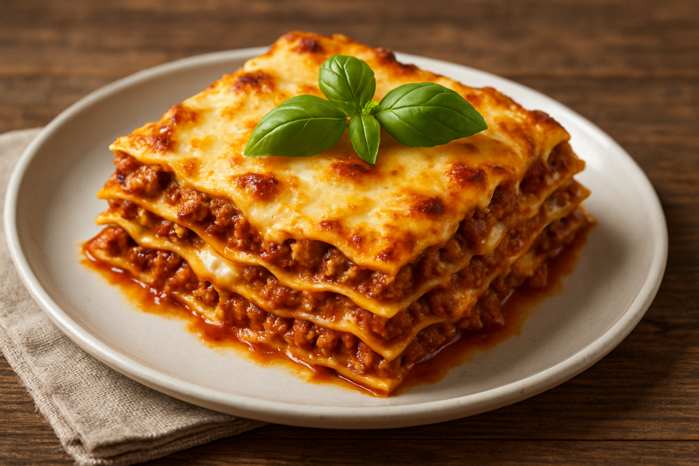

Home
Lasagna

Description
This classic lasagna recipe layers sheets of pasta with a rich, meaty tomato sauce, creamy béchamel, and melted mozzarella. The slow-simmered sauce is made with ground beef, onions, garlic, and Italian herbs, creating a deep and savory flavor.
Each bite delivers a comforting combination of tender pasta, hearty meat, and gooey cheese, baked to golden perfection. It’s a perfect dish for family dinners, special occasions, or anyone craving a warm, homemade Italian meal.
Ingredients
- Lasagna noodles
- Ground beef
- Tomato sauce
- Onion
- Garlic
- Olive oil
- Italian seasoning
- Salt and pepper
- Béchamel sauce or ricotta cheese
- Shredded mozzarella cheese
- Grated Parmesan cheese
Steps
- Preheat your oven to 180°C (350°F).
- Cook the lasagna noodles according to the package instructions. Drain and set aside.
- Sauté onions and garlic in olive oil, then add ground beef and cook until browned.
- Add tomato sauce, Italian seasoning, salt, and pepper. Simmer for 15–20 minutes.
- In a baking dish, layer noodles, meat sauce, béchamel (or ricotta), and mozzarella. Repeat layers.
- Top with Parmesan cheese and bake for 30–40 minutes until golden and bubbling.
- Let it rest for 10 minutes before serving.